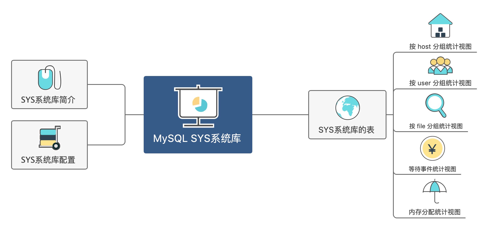

基于MySQL 5.7.18 版本整理

初识 SYS 系统库 SYS系统库开发网站
SYS系统库使用环境 在使用sys系统库之前，你需要确保你的数据库环境满足如下条件：
sys系统库支持MySQL 5.6或更高版本，5.5.x及其以下版本不支持；sys系统库提供了一些代替直接访问performance_schema的视图，所以必须启用performance_schema(performance_schema系统参数设置为ON)之后sys系统库的大部分功能才能正常使用；要完全访问sys系统库，用户必须具有以下权限：
对所有sys表和视图具有SELECT权限
对所有sys存储过程和函数具有EXECUTE权限
对sys_config表具有INSERT、UPDATE权限
对某些特定的sys系统库存储过程和函数需要额外权限，如，ps_setup_save()存储过程，需要临时表相关的权限
sys系统库执行访问的对象相关的权限：
任何被sys系统库访问的performance_schema表需要有SELECT权限，如果要使用sys系统库对performance_schema相关表执行更新，则需要performance_schema相关表的UPDATE权限
INFORMATION_SCHEMA.INNODB_BUFFER_PAGE表的PROCESS
如果要充分使用sys系统库的功能，则必须启用某些performance_schema的instruments和consumers，如下：
所有wait instruments
所有stage instruments
所有statement instruments
对于所启用的类型事件的instruments，还需要启用对应类型的consumers(xxx_current和xxx_history_long)，要了解某存储过程具体做了什么事情可能通过show create procedure procedure_name;语句查看
实践1-启动所有需要的instruments和consumers 可以使用sys系统库本身来启用所有需要的instruments和consumers：
启用所有wait instruments：CALL sys.ps_setup_enable_instrument('wait');
启用所有stage instruments：CALL sys.ps_setup_enable_instrument('stage');
启用所有statement instruments：CALL sys.ps_setup_enable_instrument('statement');
启用所有事件类型的current表：CALL sys.ps_setup_enable_consumer('current');
启用所有事件类型的history_long表：CALL sys.ps_setup_enable_consumer('history_long');
# 启用所有`wait instruments` CALL sys.ps_setup_enable_instrument('wait' );# 启用所有`stage instruments` CALL sys.ps_setup_enable_instrument('stage' );# 启用所有`statement instruments` CALL sys.ps_setup_enable_instrument('statement' );# 启用所有事件类型的`current `表 CALL sys.ps_setup_enable_consumer('current' );# 启用所有事件类型的`history_long`表 CALL sys.ps_setup_enable_consumer('history_long' );
实践2-快速恢复到performance_schema的默认配置 CALL sys.ps_setup_reset_to_default(TRUE );
注意：
performance_schema的默认配置就可以满足sys系统库的大部分数据收集功能。启用上述所提及的所有instruments和consumers会对性能产生一定影响，因此最好仅启用所需的配置。
如果你在启用了一些默认配置之外的配置，则可以使用存储过程：CALL sys.ps_setup_reset_to_default(TRUE); 来快速恢复到performance_schema的默认配置。
对于以上繁杂的权限要求，通常创建一个具有管理员权限的账号即可，当然如果你有明确的需求，那另当别论，但sys系统库通常都是提供给专业的DBA人员排查一些特定问题使用的，其下所涉及的各项查询或多或少都会对性能有一定影响（主要体现在performance_schema功能实现的性能开销），在不明需求的情况下，不建议开放这些功能来作为常规的监控手段使用。
SYS系统库初体验 实践1-查看数据库版本 通过version视图可以查看sys 系统库和mysql server的版本号
# version视图可以查看sys 系统库和mysql server的版本号 mysql> USE sys; mysql> SELECT * FROM version; + | sys_version | mysql_version | + | 1.5 .0 | 5.7 .9 - debug- log | +
也可以使用db_name.view_name、db_name.procedure_name、db_name.func_name等方式在不指定默认数据库的情况下访问sys 系统库中的对象(这叫做名称限定对象引用)，如下：
mysql> SELECT * FROM sys.version; + | sys_version | mysql_version | + | 1.5 .0 | 5.7 .9 - debug- log | +
实践2-视图数值展示的区别 PS：下文中的示例中，对于sys系统库的访问都是假定指定了默认数据库为 sys 系统库。
SYS系统库下包含许多视图，它们以各种方式对performance_schema表进行聚合计算 展示。这些视图中大部分都是成对出现，两个视图名称相同，但有一个视图是带x$字符前缀的，例如：
host_summary_by_file_io: 相关数值数据转化为人性化显示，例如毫秒、秒、分钟、小时、天等x$host_summary_by_file_io ：相关数值保持原始的数据(皮秒)
以上两个视图均代表按照主机进行汇总统计的文件I/O性能数据，两个视图访问数据源是相同的。
# x$host_summary_by_file_io视图汇总数据，显示未格式化的皮秒单位延迟时间，没有x$前缀字符的视图输出的信息经过单位换算之后可读性更高 mysql> SELECT * FROM host_summary_by_file_io; + | host | ios | io_latency | + | localhost | 67570 | 5.38 s | | background | 3468 | 4.18 s | + # 对于带x$的视图显示原始的皮秒单位数值，对于程序或工具获取使用更易于数据处理 mysql> SELECT * FROM x$host_summary_by_file_io; + | host | ios | io_latency | + | localhost | 67574 | 5380678125144 | | background | 3474 | 4758696829416 | +
实践3-查看SYS库的对象DDL 要查看 sys 系统库对象定义语句，可以使用适当的SHOW语句或INFORMATION_SCHEMA库查询。例如，要查看session视图和format_bytes()函数的定义，可以使用如下语句：
mysql> SHOW CREATE VIEW session\G; mysql> SHOW CREATE FUNCTION format_bytes\G;
实践4-导出导入SYS库 备份SYS库
mysqldump --databases --routines sys> sys_dump.sql mysqlpump sys> sys_dump.sql
导入SYS库
SYS系统库的进度报告功能 从MySQL 5.7.9开始，sys系统库视图提供查看长时间运行的事务的进度报告，通过processlist和session以及x$前缀的视图进行查看，其中:
如下：
processlist session x$processlist x$session
session视图是直接调用processlist视图过滤了后台线程和command为Daemon的线程（所以两个视图输出结果的字段相同），而processlist线程联结查询了threads、events_waits_current、events_stages_current、events_statements_current、events_transactions_current、sys.x$memory_by_thread_by_current_bytes、session_connect_attrs表，so，需要打开相应的instruments和consumers，否则谁没打开谁对应的信息字段列就为NULL，对于trx_state字段为ACTIVE的线程，progress可以输出百分比进度信息(只有支持进度的事件才会被统计并打印进来)
实践1-查看语句进度信息 # 查看当前正在执行的语句进度信息 select * from session where conn_id!= connection_id() and trx_state= 'ACTIVE' ;# 查看已经执行完的语句相关统计信息 select * from session where conn_id!= connection_id() and trx_state= 'COMMITTED' ;
操作记录
# 查看当前正在执行的语句进度信息 admin@localhost : sys 06 :57 :21 > select * from session where conn_id!= connection_id() and trx_state= 'ACTIVE' \G; * * * * * * * * * * * * * * * * * * * * * * * * * * * 1. row * * * * * * * * * * * * * * * * * * * * * * * * * * * thd_id: 47 conn_id: 5 user : admin@localhost db: sbtest command: Query state: alter table (merge sort) time : 29 current_statement: alter table sbtest1 add index i_c(c) statement_latency: 29.34 s progress: 49.70 lock_latency: 4.34 ms rows_examined: 0 rows_sent: 0 rows_affected: 0 tmp_tables: 0 tmp_disk_tables: 0 full_scan: NO last_statement: NULL last_statement_latency: NULL current_memory: 4.52 KiB last_wait: wait/ io/ file/ innodb/ innodb_temp_file last_wait_latency: 369.52 us source: os0file.ic:470 trx_latency: 29.45 s trx_state: ACTIVE trx_autocommit: YES pid: 4667 program_name: mysql 1 row in set (0.12 sec)# 查看已经执行完的语句相关统计信息 admin@localhost : sys 07 :02 :21 > select * from session where conn_id!= connection_id() and trx_state= 'COMMITTED' \G; * * * * * * * * * * * * * * * * * * * * * * * * * * * 1. row * * * * * * * * * * * * * * * * * * * * * * * * * * * thd_id: 47 conn_id: 5 user : admin@localhost db: sbtest command: Sleep state: NULL time : 372 current_statement: NULL statement_latency: NULL progress: NULL lock_latency: 4.34 ms rows_examined: 0 rows_sent: 0 rows_affected: 0 tmp_tables: 0 tmp_disk_tables: 0 full_scan: NO last_statement: alter table sbtest1 add index i_c(c) last_statement_latency: 1.61 m current_memory: 4.52 KiB last_wait: idle last_wait_latency: Still Waiting source: socket_connection.cc:69 trx_latency: 1.61 m trx_state: COMMITTED trx_autocommit: YES pid: 4667 program_name: mysql 1 row in set (0.12 sec)
对于stage事件进度报告要求必须启用events_stages_current consumers，启用需要查看进度相关的instruments。例如：
stage/ sql / Copying to tmp table stage/ innodb/ alter table (end ) stage/ innodb/ alter table (flush) stage/ innodb/ alter table (insert ) stage/ innodb/ alter table (log apply index) stage/ innodb/ alter table (log apply table ) stage/ innodb/ alter table (merge sort) stage/ innodb/ alter table (read PK and internal sort) stage/ innodb/ buffer pool load
对于不支持进度的stage 事件，或者未启用所需的instruments或consumers的stage事件，则对应的进度信息列显示为NULL。
官方文档：
https://dev.mysql.com/doc/refman/5.7/en/sys-schema-progress-reporting.html
https://dev.mysql.com/doc/refman/5.7/en/sys-schema-prerequisites.html
https://dev.mysql.com/doc/refman/5.7/en/sys-schema-usage.html
SYS 系统库配置 SYS_CONFIG 表 该表包含SYS系统库的配置选项，每个配置选项一行记录。该表是INNODB表，可以通过客户端更新此表来持久化配置，SERVER重启不会丢失。
SYS_CONFIG表字段含义如下：
VARIABLE：配置选项名称
VALUE：配置选项值
SET_TIME：该行配置最近修改时间
SET_BY：最近一次对改行配置进行修改的帐户名。如果自SERVER安装SYS 系统库以来，该行配置从未被更改过，则该列值为NULL
为了减少对SYS_CONFIG表直接读取的次数，SYS 系统库中的视图、存储过程在需要使用到这些配置选项时，会优先检查这些配置选项对应的用户自定义配置选项变量(用户自定义配置选项变量与该表中的配置选项都具有相同的名称，例如：表中的DIAGNOSTICS.INCLUDE_RAW选项，对应的自定义配置选项变量是@SYS.DIAGNOSTICS.INCLUDE_RAW)。如果用户定义的配置选项变量存在于当前会话作用域中并且是非空的，那么SYS 系统库中的函数、存储过程将优先使用该配置选项变量值。否则，该SYS 系统库函数和存储过程将使用SYS_CONFIG表中的配置选项值(从表中读取配置选项值之后，会将SYS_CONFIG表中的配置选项时同时更新到用户自定义配置选项变量中，以便在同一会话后续对该值的引用时使用变量值，而不必再次从SYS_CONFIG表中读取)，示例：STATEMENT_TRUNCATE_LEN配置选项控制FORMAT_STATEMENT()函数返回的语句的最大长度。默认值为64.如果要临时将当前会话的值更改为32，可以设置对应的@SYS.STATEMENT_TRUNCATE_LEN用户定义的配置选项变量：
ADMIN@LOCALHOST : SYS 11:47:37> SELECT @SYS.STATEMENT_TRUNCATE_LEN; +-----------------------------+ | @SYS.STATEMENT_TRUNCATE_LEN | +-----------------------------+ | NULL | +-----------------------------+ 1 ROW IN SET (0.00 SEC) ADMIN@LOCALHOST : SYS 11:51:53> SET @STMT = 'SELECT VARIABLE, VALUE, SET_TIME, SET_BY FROM SYS_CONFIG' ; QUERY OK, 0 ROWS AFFECTED (0.00 SEC) ADMIN@LOCALHOST : SYS 11:52:04> SELECT FORMAT_STATEMENT(@STMT); +----------------------------------------------------------+ | FORMAT_STATEMENT(@STMT) | +----------------------------------------------------------+ | SELECT VARIABLE, VALUE, SET_TIME, SET_BY FROM SYS_CONFIG | +----------------------------------------------------------+ 1 ROW IN SET (0.01 SEC) ADMIN@LOCALHOST : SYS 11:52:12> SELECT @SYS.STATEMENT_TRUNCATE_LEN; +-----------------------------+ | @SYS.STATEMENT_TRUNCATE_LEN | +-----------------------------+ | 64 | +-----------------------------+ 1 ROW IN SET (0.00 SEC) ADMIN@LOCALHOST : SYS 11:52:20> SET @SYS.STATEMENT_TRUNCATE_LEN = 32; QUERY OK, 0 ROWS AFFECTED (0.00 SEC) ADMIN@LOCALHOST : SYS 11:52:34> SELECT @SYS.STATEMENT_TRUNCATE_LEN; +-----------------------------+ | @SYS.STATEMENT_TRUNCATE_LEN | +-----------------------------+ | 32 | +-----------------------------+ 1 ROW IN SET (0.00 SEC) ADMIN@LOCALHOST : SYS 11:52:41> SELECT FORMAT_STATEMENT(@STMT); +-----------------------------------+ | FORMAT_STATEMENT(@STMT) | +-----------------------------------+ | SELECT VARIABL ... ROM SYS_CONFIG | +-----------------------------------+ 1 ROW IN SET (0.00 SEC)
要停止使用用户定义的配置选项变量并恢复使用SYS_CONFIG表中的值，可以将会话中的配置选项变量设置为NULL，或者结束当前会话（结束会话会使得用户定义的变量被销毁）重新开启一个新的会话：
MYSQL> SET @SYS.STATEMENT_TRUNCATE_LEN = NULL; MYSQL> SELECT FORMAT_STATEMENT(@STMT); +----------------------------------------------------------+ | FORMAT_STATEMENT(@STMT) | +----------------------------------------------------------+ | SELECT VARIABLE, VALUE, SET_TIME, SET_BY FROM SYS_CONFIG | +----------------------------------------------------------+
注意：如果用户在会话中设置了自定义配置选项变量值，然后再更新了SYS_CONFIG表中相同名称的配置选项，则对于当前会话，SYS_CONFIG表中的配置选项值不生效（除非设置自定义配置选项变量值为NULL），只对于新的会话且不存在自定义配置选项变量或者自定义配置选项值为NULL生效（因为此时会从SYS_CONFIG表中读取）。
SYS_CONFIG表中的选项和相应的用户定义的配置选项变量相关描述如下：
DIAGNOSTICS.ALLOW_I_S_TABLES，@SYS.DIAGNOSTICS.ALLOW_I_S_TABLES：如果此选项为ON，则DIAGNOSTICS()存储过程在调用时会扫描INFORMATION_SCHEMA.TABLES表找到所有的基表与STATISTICS表执行联结查询，扫描每个表的统计信息。如果基表非常多，该操作可能比较昂贵。默认为OFF。此选项在MYSQL 5.7.9中新增
DIAGNOSTICS.INCLUDE_RAW，@SYS.DIAGNOSTICS.INCLUDE_RAW：如果此选项为ON，则DIAGNOSTICS()存储过程的输出信息中会包括METRICS视图中的原始输出信息（该存储过程中会调用METRICS视图）。默认为OFF。此选项在MYSQL 5.7.9中新增
PS_THREAD_TRX_INFO.MAX_LENGTH，@SYS.PS_THREAD_TRX_INFO.MAX_LENGTH：由PS_THREAD_TRX_INFO()函数生成的JSON输出结果的最大长度。默认值为65535字节。此选项在MYSQL 5.7.9中新增
STATEMENT_PERFORMANCE_ANALYZER.LIMIT，@SYS.STATEMENT_PERFORMANCE_ANALYZER.LIMIT：不具有内置限制的视图返回的最大行数。默认值为100（例如，STATEMENTS_WITH_RUNTIMES_IN_95TH_PERCENTILE视图具有内置限制，即只返回平均执行时间为占总执行时间分布的95百分位数的语句）。此选项在MYSQL 5.7.9中新增
STATEMENT_PERFORMANCE_ANALYZER.VIEW，@SYS.STATEMENT_PERFORMANCE_ANALYZER.VIEW：给STATEMENT_PERFORMANCE_ANALYZER()存储过程当作入参使用的自定义查询或视图名称（STATEMENT_PERFORMANCE_ANALYZER()存储过程由DIAGNOSTICS()存储过程内部调用）。如果该选项值包含空格，则将其值解释为查询语句。否则解释为视图名称，且这个视图必须是提前创建好的用于查询PERFORMANCE_SCHEMA.EVENTS_STATEMENTS_SUMMARY_BY_DIGEST表的视图。如果STATEMENT_PERFORMANCE_ANALYZER.LIMIT配置选项值大于0，则STATEMENT_PERFORMANCE_ANALYZER.VIEW配置选项指定的查询语句或视图中不能有任何LIMIT子句(因为STATEMENT_PERFORMANCE_ANALYZER.LIMIT选项在STATEMENT_PERFORMANCE_ANALYZER()存储过程中是作为一个条件判断值决定是否要添加一个LIMIT子句，如果你再自行添加一个LIMIT会导致语法错误)。STATEMENT_PERFORMANCE_ANALYZER.VIEW配置选项默认值为NULL。此选项在MYSQL 5.7.9中新增
STATEMENT_TRUNCATE_LEN，@SYS.STATEMENT_TRUNCATE_LEN：控制FORMAT_STATEMENT()函数返回的语句文本的最大长度。超过该长度的语句文本会被截断，只保留该配置选项定义的长度文本。默认值为64字节
其他选项可以被添加到SYS_CONFIG表中。例如：如果存在DEBUG配置选项且不为NULL值，则DIAGNOSTICS()和EXECUTE_PREPARED_STMT()存储过程调用时会执行检查并做相应的判断，但默认情况下，此选项在SYS_CONFIG表中不存在，因为DEBUG输出通常只能临时启用，通过会话级别设置自定义配置选项变量实现，如：SET @SYS.DEBUG=’ON’;
# 如果所有会话都需要使用，则可以将DEBUG选项INSERT到SYS_CONFIG表中 MYSQL> INSERT INTO SYS_CONFIG (VARIABLE, VALUE) VALUES('DEBUG', 'ON'); # 要更改表中的调试配置选项值，可以使用UPDATE语句更新该配置选项值 ## 首先，修改表中的值： MYSQL> UPDATE SYS_CONFIG SET VALUE = 'OFF' WHERE VARIABLE = 'DEBUG'; ## 然后，为了确保当前会话中的存储过程调用时使用表中的更改后的值，需要将相应的用户定义的变量设置为NULL MYSQL> SET @SYS.DEBUG = NULL;
记录内容示例
ADMIN@LOCALHOST : SYS 09 :48 :46 > SELECT * FROM SYS_CONFIG; + | VARIABLE | VALUE | SET_TIME | SET_BY | + | DIAGNOSTICS.ALLOW_I_S_TABLES | OFF | 2017 -07 -06 12 :43 :53 | NULL | | DIAGNOSTICS.INCLUDE_RAW | OFF | 2017 -07 -06 12 :43 :53 | NULL | | PS_THREAD_TRX_INFO.MAX_LENGTH | 65535 | 2017 -07 -06 12 :43 :53 | NULL | | STATEMENT_PERFORMANCE_ANALYZER.LIMIT | 100 | 2017 -07 -06 12 :43 :53 | NULL | | STATEMENT_PERFORMANCE_ANALYZER.VIEW | NULL | 2017 -07 -06 12 :43 :53 | NULL | | STATEMENT_TRUNCATE_LEN | 64 | 2017 -07 -06 12 :43 :53 | NULL | + 6 ROWS IN SET (0.00 SEC)
PS：对SYS_CONFIG表的INSERT和UPDATE操作会触发SYS_CONFIG_INSERT_SET_USER和SYS_CONFIG_UPDATE_SET_USER触发器，而该触发器在5.7.X版本中新增了一个用户MYSQL.SYS，且这俩触发器定义时指定了DEFINER=MYSQL.SYS@LOCALHOST（表示该触发器只能用MYSQL.SYS用户调用），SO..该用户必须存在(对MYSQL 做安全加固的小朋友要注意了，别直接对MYSQL.USER表做TRUNCATE之类的操作，先看一眼表中存在着哪些用户)，否则对SYS_CONFIG表操作时就算是超级管理员用户也无法修改（报错：ERROR 1449 (HY000): THE USER SPECIFIED AS A DEFINER (‘MYSQL.SYS‘@’LOCALHOST’) DOES NOT EXIST），如果不小心删除了MYSQL.SYS用户 ，可以使用如下语句重新创建(注意：使用CREATE语句创建用户会失败，报错：ERROR 1396 (HY000): OPERATION CREATE USER FAILED FOR ‘MYSQL.SYS‘@’LOCALHOST’，所以，强烈不建议删除MYSQL.SYS用户，因为GRANT创建用户的语法即将废弃，当然，如果在不支持GRANT语句创建用户的MYSQL版本中删了MYSQL.SYS用户，也有办法补救，比如：直接INSERT用户权限表或者DROP掉触发器再指定INVOKER=MYSQL.SYS@LOCALHOST)
GRANT TRIGGER ON SYS.* TO 'MYSQL.SYS' @'LOCALHOST' IDENTIFIED BY 'LETSG0' ;# 注意：MYSQL.SYS用户初始化默认对表SYS.SYS_CONFIG表只有SELECT 权限，无法调用SYS_CONFIG_INSERT_SET_USER和SYS_CONFIG_UPDATE_SET_USER触发器完成更新SET_BY字段为当前操作用户名，会报错 # ERROR 1143 (42000 ): UPDATE COMMAND DENIED TO USER 'MYSQL.SYS' @'LOCALHOST' FOR COLUMN 'SET_BY' IN TABLE 'SYS_CONFIG' ，所以要实现这个功能，针对SYS.SYS_CONFIG表还需要添加INSERT 和UPDATE 权限给MYSQL.SYS用户 GRANT SELECT ,INSERT ,UPDATE ON SYS.SYS_CONFIG TO 'MYSQL.SYS' @'LOCALHOST' IDENTIFIED BY 'LETSG0' ;
SYS_CONFIG_INSERT_SET_USER触发器 当对SYS_CONFIG表执行INSERT语句添加配置选项行时，SYS_CONFIG_INSERT_SET_USER触发器会将SYS_CONFIG表的SET_BY列设置为当前用户名。
注意事项：要使得该触发器生效，有如下三个条件：
* MYSQL.SYS用户必须存在，因为定义语句中DEFINER=‘MYSQL.SYS‘@’LOCALHOST’ 表示只有该用户才能够调用该触发器，当然，为了方便，你可以删掉这个触发器，然后使用INVOKER=‘MYSQL.SYS‘@’LOCALHOST’子句创建
* MYSQL.SYS用户初始化默认对SYS.SYS_CONFIG表只有SELECT权限，无法调用SYS_CONFIG_INSERT_SET_USER和SYS_CONFIG_UPDATE_SET_USER触发器完成更新SET_BY字段为当前操作用户名，会报错ERROR 1143 (42000): UPDATE COMMAND DENIED TO USER ‘MYSQL.SYS‘@’LOCALHOST’ FOR COLUMN ‘SET_BY’ IN TABLE ‘SYS_CONFIG’，所以要实现这个功能，针对SYS.SYS_CONFIG表还需要添加INSERT和UPDATE权限给MYSQL.SYS用户
* @SYS.IGNORE_SYS_CONFIG_TRIGGERS自定义变量必须为0值，任何非0值将导致该触发器不执行更新SET_BY字段操作
SYS_CONFIG_INSERT_SET_USER触发器定义语句如下：
DROP TRIGGER IF EXISTS SYS_CONFIG_INSERT_SET_USER;DELIMITER $$ CREATE DEFINER= 'MYSQL.SYS' @'LOCALHOST' TRIGGER SYS_CONFIG_INSERT_SET_USER BEFORE INSERT ON SYS_CONFIGFOR EACH ROW BEGIN IF @SYS .IGNORE_SYS_CONFIG_TRIGGERS != TRUE AND NEW.SET_BY IS NULL THEN SET NEW.SET_BY = USER (); END IF;END $$DELIMITER ;
SYS_CONFIG_UPDATE_SET_USER触发器 当对SYS_CONFIG表执行UPDATE语句添加配置选项行时，SYS_CONFIG_UPDATE_SET_USER触发器会将SYS_CONFIG表的SET_BY列设置为当前用户名
注意事项：同SYS_CONFIG_INSERT_SET_USER触发器注意事项
SYS_CONFIG_UPDATE_SET_USER触发器定义语句如下：
DROP TRIGGER IF EXISTS SYS_CONFIG_UPDATE_SET_USER; DELIMITER $$ CREATE DEFINER='MYSQL.SYS'@'LOCALHOST' TRIGGER SYS_CONFIG_UPDATE_SET_USER BEFORE UPDATE ON SYS_CONFIG FOR EACH ROW BEGIN IF @SYS.IGNORE_SYS_CONFIG_TRIGGERS != TRUE AND NEW.SET_BY IS NULL THEN SET NEW.SET_BY = USER(); END IF; END$$ DELIMITER ;
内容参考链接如下：
按 host 分组统计视图 host_summary_by_file_io,x$host_summary_by_file_io 按主机（与用户账号组成中的host值相同）分组统计的文件I/O的IO总数和IO延迟时间，默认按照总I/O等待时间降序排序。数据来源：performance_schema.events_waits_summary_by_host_by_event_name表，调用了sys.format_time()自定义函数、sum()聚合函数对查询结果进行求和运算并转换时间单位。
下面我们看看使用该视图查询返回的结果集。
# 从查询的结果中可以看到，延迟时间带有单位秒，对人类来说更易读 mysql> SELECT * FROM host_summary_by_file_io; + | host | ios | io_latency | + | localhost | 67570 | 5.38 s | | background | 3468 | 4.18 s | + # 带x$前缀的同名视图范围的时间值未经过可读格式装换，单位为皮秒（万亿分之一秒，可读性比较差） mysql> SELECT * FROM x$host_summary_by_file_io; + | host | ios | io_latency | + | localhost | 67574 | 5380678125144 | | background | 3474 | 4758696829416 | +
视图字段含义如下：
host：客户端连接的主机名或IP。在Performance Schema表中的HOST列为NULL的行在这里假定为后台线程，且在该视图host列显示为background
ios：文件I/O事件总次数，即可以认为就是io总数
io_latency：文件I/O事件的总等待时间（执行时间）
PS：没有x$前缀的视图旨在提供对用户更加友好和更易于阅读的输出格式。而带x$前缀的视图输出的原始格式值更适用于一些工具类的程序使用。没有x$前缀的视图中将会调用如下函数中的一个或者多个进行数值单位转换再输出（后续其他视图的可读格式转换视图相同，下文不再赘述）：
字节值使用format_bytes()函数格式化并转换单位，详见后续章节
时间值使用format_time()函数格式化并转换单位。详见后续章节
使用format_statement()函数将SQL语句文本截断为statement_truncate_len配置选项设置的显示宽度。详见后续章节
路径名称使用format_path()函数截取并替换为相应的系统变量名称。详见后续章节
该视图只统计文件IO等待事件信息(“wait/io/file/%”)
host_summary,x$ host_summary 按照主机分组统计的语句延迟（执行）时间、次数、相关的文件I/O延迟、连接数和内存分配大小等摘要信息，数据来源：performance_schema.accounts、sys.x$host_summary_by_statement_latency、sys.x$host_summary_by_file_io
下面我们看看使用该视图查询返回的结果集。
# 不带x$前缀的视图 root@localhost : sys 12 :38 :11 > select * from host_summary limit 1 \G * 1. row * host: 192.168 .2 .122 statements: 9 statement_latency: 13.22 ms statement_avg_latency: 1.47 ms table_scans: 0 file_ios: 11 file_io_latency: 53.33 us current_connections: 1 total_connections: 1 unique_users: 1 current_memory: 0 bytes total_memory_allocated: 0 bytes 1 row in set (0.01 sec)# 带x$前缀的视图 root@localhost : sys 12 :38 :14 > select * from x$host_summary limit 1 \G * 1. row * host: 192.168 .2 .122 statements: 9 statement_latency: 13218739000 statement_avg_latency: 1468748777.7778 table_scans: 0 file_ios: 11 file_io_latency: 53332848 current_connections: 1 total_connections: 1 unique_users: 1 current_memory: 0 total_memory_allocated: 0 1 row in set (0.01 sec)
视图字段含义如下：
host：客户端连接的主机名或IP。在Performance Schema表中的HOST列为NULL的行在这里假定为后台线程，且在该视图host列显示为background
statements：语句总执行次数
statement_latency：语句总延迟时间（执行时间）
statement_avg_latency：语句的平均延迟时间(执行时间)
table_scans：语句的表扫描总次数
file_ios：文件I/O事件总次数
file_io_latency：文件I/O事件总延迟时间（执行时间）
current_connections：当前连接数
total_connections：总历史连接数
unique_users：不同（去重）用户数量
current_memory：当前内存使用量
total_memory_allocated：总的内存分配量
PS：该视图只统计文件IO等待事件信息(wait/io/file/%)
host_summary_by_file_io_type,x$host_summary_by_file_io_type 按照主机和事件名称分组的文件I/O事件次数、延迟统计信息，默认按照主机和总I/O延迟时间降序排序。数据来源：performance_schema.events_waits_summary_by_host_by_event_name，调用了sys.format_time()自定义函数转换时间单位。
下面我们看看使用该视图查询返回的结果集。
# 不带x$前缀的视图 root@localhost : sys 12 :39 :51 > select * from host_summary_by_file_io_type limit 3 ; + | host | event_name | total | total_latency | max_latency | + | 192.168 .2 .122 | wait/ io/ file/ sql / binlog | 11 | 53.33 us | 24.33 us | | background | wait/ io/ file/ innodb/ innodb_data_file | 1631 | 5.85 s | 35.48 ms | | background | wait/ io/ file/ sql / FRM | 2151 | 3.89 s | 26.10 ms | + 3 rows in set (0.01 sec)# 带x$前缀的视图 root@localhost : sys 12 :39 :54 > select * from x$host_summary_by_file_io_type limit 3 ; + | host | event_name | total | total_latency | max_latency | + | 192.168 .2 .122 | wait/ io/ file/ sql / binlog | 11 | 53332848 | 24334839 | | background | wait/ io/ file/ innodb/ innodb_data_file | 1631 | 5851714703037 | 35476899531 | | background | wait/ io/ file/ sql / FRM | 2151 | 3894316306089 | 26099526756 | + 3 rows in set (0.00 sec)
视图字段含义如下：
host：客户端连接的主机名或IP。在Performance Schema表中的HOST列为NULL的行在这里假定为后台线程，且在该视图host列显示为background
EVENT_NAME：文件I/O事件名称
total：文件I/O事件发生总次数
total_latency：文件I/O事件的总延迟时间（执行时间）
max_latency：文件I/O事件的单次最大延迟时间（执行时间）
PS：该视图只统计文件IO等待事件信息(wait/io/file/%)
host_summary_by_stages,x$host_summary_by_stages 按照主机和事件名称分组的阶段事件总次数、总执行时间、平均执行时间等统计信息，默认按照主机和总的延迟（执行）时间降序排序。数据来源：performance_schema.events_stages_summary_by_host_by_event_name，调用了sys.format_time()自定义函数转换时间单位。
下面我们看看使用该视图查询返回的结果集。
# 不带x$前缀的视图 root@localhost : sys 12 :39 :57 > select * from host_summary_by_stages limit 3 ; + | host | event_name | total | total_latency | avg_latency | + | background | stage/ innodb/ buffer pool load | 1 | 4.68 s | 4.68 s | + 1 row in set (0.00 sec)# 带x$前缀的视图 root@localhost : sys 12 :40 :15 > select * from x$host_summary_by_stages limit 3 ; + | host | event_name | total | total_latency | avg_latency | + | background | stage/ innodb/ buffer pool load | 1 | 4678671071000 | 4678671071000 | + 1 row in set (0.00 sec)
视图字段含义如下：
host：客户端连接的主机名或IP。在Performance Schema表中的HOST列为NULL的行在这里假定为后台线程，且在该视图host列显示为background
EVENT_NAME：阶段事件名称
total：阶段事件总发生次数
total_latency：阶段事件总延迟(执行)时间
avg_latency：阶段事件平均延迟(执行)时间
host_summary_by_statement_latency,x$host_summary_by_statement_latency 按照主机和事件名称分组的语句事件总次数、总执行时间、最大执行时间、锁时间以及数据行相关的统计信息，默认按照总延迟（执行）时间降序排序。数据来源：performance_schema.events_statements_summary_by_host_by_event_name
下面我们看看使用该视图查询返回的结果集。
# 不带x$前缀的视图 root@localhost : sys 12 :40 :19 > select * from host_summary_by_statement_latency limit 3 ; + | host | total | total_latency | max_latency | lock_latency | rows_sent | rows_examined | rows_affected | full_scans | + | localhost | 3447 | 539.61 ms | 89.37 ms | 131.90 ms | 3023 | 40772 | 0 | 108 | | 192.168 .2 .122 | 9 | 13.22 ms | 12.55 ms | 0 ps | 5 | 0 | 0 | 0 | | background | 0 | 0 ps | 0 ps | 0 ps | 0 | 0 | 0 | 0 | + 3 rows in set (0.01 sec)# 带x$前缀的视图 root@localhost : sys 12 :40 :36 > select * from x$host_summary_by_statement_latency limit 3 ; + | host | total | total_latency | max_latency | lock_latency | rows_sent | rows_examined | rows_affected | full_scans | + | localhost | 3528 | 544883806000 | 89365202000 | 132140000000 | 3026 | 41351 | 0 | 109 | | 192.168 .2 .122 | 9 | 13218739000 | 12550251000 | 0 | 5 | 0 | 0 | 0 | | background | 0 | 0 | 0 | 0 | 0 | 0 | 0 | 0 | + 3 rows in set (0.01 sec)
视图字段含义如下：
host：客户端连接的主机名或IP。在Performance Schema表中的HOST列为NULL的行在这里假定为后台线程，且在该视图host列显示为background
total：语句总执行次数
total_latency：语句总延迟(执行)时间
max_latency：语句单个最大延迟(执行)时间
lock_latency：语句总锁延迟(执行）时间
rows_sent：语句返回给客户端的总数据行数
rows_examined：语句从存储引擎层读取的总数据行数
rows_affected：语句执行时受影响（DML会返回数据发生变更的受影响行数，select等不会产生数据变更的语句执行时不会有受影响行数返回）的总数据行数
full_scans：语句全表扫描总次数
host_summary_by_statement_type,x$host_summary_by_statement_type 按照主机和语句分组的当前语句事件总次数、总执行时间、最大执行时间、锁时间以及数据行相关的统计信息（与performance_schema.host_summary_by_statement_latency 视图比起来，该视图只返回执行时间不为0的统计信息，且多了一个statement字段显示语句事件名称层级中的最后一部分字符），数据来源:performance_schema.events_statements_summary_by_host_by_event_name
下面我们看看使用该视图查询返回的结果集。
# 不带x$前缀的视图 root@localhost : sys 12 :40 :40 > select * from host_summary_by_statement_type limit 3 ; + | host | statement | total | total_latency | max_latency | lock_latency | rows_sent | rows_examined | rows_affected | full_scans | + | 192.168 .2 .122 | select | 5 | 12.92 ms | 12.55 ms | 0 ps | 5 | 0 | 0 | 0 | | 192.168 .2 .122 | set_option | 3 | 258.22 us | 166.40 us | 0 ps | 0 | 0 | 0 | 0 | | 192.168 .2 .122 | Register Slave | 1 | 37.68 us | 37.68 us | 0 ps | 0 | 0 | 0 | 0 | + 3 rows in set (0.00 sec)# 带x$前缀的视图 root@localhost : sys 12 :41 :00 > select * from x$host_summary_by_statement_type limit 3 ; + | host | statement | total | total_latency | max_latency | lock_latency | rows_sent | rows_examined | rows_affected | full_scans | + | 192.168 .2 .122 | select | 5 | 12922834000 | 12550251000 | 0 | 5 | 0 | 0 | 0 | | 192.168 .2 .122 | set_option | 3 | 258224000 | 166400000 | 0 | 0 | 0 | 0 | 0 | | 192.168 .2 .122 | Register Slave | 1 | 37681000 | 37681000 | 0 | 0 | 0 | 0 | 0 | + 3 rows in set (0.01 sec)
视图字段含义如下：
statement：显示语句事件名称层级中的最后一部分字符，如：statement/com/Prepare instruments，在statement字段中就显示Prepare
其他字段含义与performance_schema.host_summary_by_statement_latency 视图字段含义相同
参考链接如下：
按 user 分组统计视图 user_summary,x$user_summary 查看活跃连接中按用户分组的总执行时间、平均执行时间、总的IOS、总的内存使用量、表扫描数量等统计信息，默认按照总延迟时间(执行时间)降序排序。数据来源：
performance_schema.accountssys.x$user_summary_by_statement_latencysys.x$user_summary_by_file_iosys.x$memory_by_user_by_current_bytes
下面我们看看使用该视图查询返回的结果。
# 不带x$前缀的视图 admin@localhost : sys 12 :54 :32 > select * from user_summary limit 1 \G * 1. row * user : admin statements: 90530 statement_latency: 2.09 h statement_avg_latency: 83.12 ms table_scans: 498 file_ios: 60662 file_io_latency: 31.05 s current_connections: 4 total_connections: 1174 unique_hosts: 2 current_memory: 85.34 MiB total_memory_allocated: 7.21 GiB 1 row in set (0.04 sec)# 带x$前缀的视图 admin@localhost : sys 12 :55 :48 > select * from x$user_summary limit 1 \G * 1. row * user : admin statements: 90752 statement_latency: 7524792139504000 statement_avg_latency: 82915992369.3583 table_scans: 500 file_ios: 60662 file_io_latency: 31053125849250 current_connections: 4 total_connections: 1174 unique_hosts: 2 current_memory: 89381384 total_memory_allocated: 7755173436 1 row in set (0.02 sec)
视图字段含义如下：
user：客户端访问用户名。如果在performance_schema表中user列为NULL，则假定为后台线程，该字段为’background’,如果为前台线程，则该字段对应具体的用户名
statements：对应用户执行的语句总数量
statement_latency：对应用户执行的语句总延迟时间(执行时间)
statement_avg_latency：对应用户执行的语句中，平均每个语句的延迟时间(执行时间)(SUM(stmt.total_latency/SUM(stmt.total))
table_scans：对应用户执行的语句发生表扫描总次数
file_ios：对应用户执行的语句产生的文件I/O事件总次数
file_io_latency：对应用户执行的语句产生的文件I/O事件的总延迟时间(执行时间)
current_connections：对应用户的当前连接数
total_connections：对应用户的历史总连接数
unique_hosts：对应用户来自不同主机(针对主机名去重)连接的数量
current_memory：对应用户的连接当前已使用的内存分配量
total_memory_allocated：对应用户的连接的历史内存分配量
PS：该视图只统计文件IO等待事件信息(wait/io/file/%)
user_summary_by_file_io,x$user_summary_by_file_io 按照用户分组的文件I/O延迟时间、IOS统计信息，默认按照总文件I/O时间延迟时间(执行时间)降序排序。数据来源：
performance_schema.events_waits_summary_by_user_by_event_name
下面我们看看使用该视图查询返回的结果。
# 不带x$前缀的视图 admin@localhost : sys 12 :56 :18 > select * from user_summary_by_file_io limit 3 ; + | user | ios | io_latency | + | admin | 30331 | 15.53 s | | background | 10119 | 2.49 s | | qfsys | 281 | 4.69 ms | + 3 rows in set (0.01 sec)# 带x$前缀的视图 admin@localhost : sys 12 :56 :21 > select * from x$user_summary_by_file_io limit 3 ; + | user | ios | io_latency | + | admin | 30331 | 15526562924625 | | background | 10122 | 2489231563125 | | qfsys | 281 | 4689150375 | + 3 rows in set (0.00 sec)
视图字段含义如下：
user：客户端用户名。如果在performance_schema表中user列为NULL，则假定为后台线程，该字段为’background’,如果为前台线程，则该字段对应具体的用户名
ios：对应用户的文件I/O事件总次数
io_latency：对应用户的文件I/O事件的总延迟时间(执行时间)
PS：该视图只统计文件IO等待事件信息(“wait/io/file/%”)
user_summary_by_file_io_type,x$user_summary_by_file_io_type 按照用户和事件类型(事件名称)分组的文件I/O延迟和IOS统计信息，默认情况下按照用户名和总文件I/O时间延迟时间(执行时间)降序排序。数据来源：performance_schema.events_waits_summary_by_user_by_event_name
下面我们看看使用该视图查询返回的结果。
# 不带x$前缀的视图 admin@localhost : sys 12 :56 :24 > select * from user_summary_by_file_io_type limit 3 ; + | user | event_name | total | latency | max_latency | + | admin | wait/ io/ file/ sql / io_cache | 27955 | 10.53 s | 67.61 ms | | admin | wait/ io/ file/ innodb/ innodb_log_file | 912 | 2.14 s | 28.22 ms | | admin | wait/ io/ file/ sql / binlog | 879 | 2.05 s | 31.75 ms | + 3 rows in set (0.00 sec)# 带x$前缀的视图 admin@localhost : sys 12 :56 :48 > select * from x$user_summary_by_file_io_type limit 3 ; + | user | event_name | total | latency | max_latency | + | admin | wait/ io/ file/ sql / io_cache | 27955 | 10534662677625 | 67608294000 | | admin | wait/ io/ file/ innodb/ innodb_log_file | 912 | 2143870695375 | 28216455000 | | admin | wait/ io/ file/ sql / binlog | 879 | 2054976453000 | 31745275125 | + 3 rows in set (0.01 sec)
视图字段含义如下：
user：客户端用户名。如果在performance_schema表中user列为NULL，则假定为后台线程，该字段为’background’,如果为前台线程，则该字段对应具体的用户名
EVENT_NAME：文件I/O事件名称
total：对应用户发生的文件I/O事件总次数
latency：对应用户的文件I/O事件的总延迟时间(执行时间)
max_latency：对应用户的单次文件I/O事件的最大延迟时间(执行时间)
PS：该视图只统计文件IO等待事件信息(“wait/io/file/%”)
user_summary_by_stages,x$user_summary_by_stages 按用户分组的阶段事件统计信息，默认情况下按照用户名和阶段事件总延迟时间(执行时间)降序排序。数据来源：performance_schema.events_stages_summary_by_user_by_event_name
下面我们看看使用该视图查询返回的结果。
# 不带x$前缀的视图 admin@localhost : sys 12 :56 :51 > select * from user_summary_by_stages limit 3 ; + | user | event_name | total | total_latency | avg_latency | + | background | stage/ innodb/ buffer pool load | 1 | 12.56 s | 12.56 s | + 1 row in set (0.01 sec)# 带x$前缀的视图 admin@localhost : sys 12 :57 :10 > select * from x$user_summary_by_stages limit 3 ; + | user | event_name | total | total_latency | avg_latency | + | background | stage/ innodb/ buffer pool load | 1 | 12561724877000 | 12561724877000 | + 1 row in set (0.00 sec)
视图字段含义如下：
user：客户端用户名。如果在performance_schema表中user列为NULL，则假定为后台线程，该字段为’background’,如果为前台线程，则该字段对应具体的用户名
EVENT_NAME：阶段事件名称
total：对应用户的阶段事件的总次数
total_latency：对应用户的阶段事件的总延迟时间(执行时间)
avg_latency：对应用户的阶段事件的平均延迟时间(执行时间)
user_summary_by_statement_latency,x$user_summary_by_statement_latency 按照用户分组的语句统计信息，默认情况下按照语句总延迟时间(执行时间)降序排序。数据来源：performance_schema.events_statements_summary_by_user_by_event_name
下面我们看看使用该视图查询返回的结果。
# 不带x$前缀的视图 admin@localhost : sys 12 :57 :13 > select * from user_summary_by_statement_latency limit 3 ; + | user | total | total_latency | max_latency | lock_latency | rows_sent | rows_examined | rows_affected | full_scans | + | admin | 45487 | 1.05 h | 45.66 m | 19.02 s | 6065 | 17578842 | 1544 | 258 | | qfsys | 9 | 929.43 ms | 928.68 ms | 0 ps | 5 | 0 | 0 | 0 | | background | 0 | 0 ps | 0 ps | 0 ps | 0 | 0 | 0 | 0 | + 3 rows in set (0.00 sec)# 带x$前缀的视图 admin@localhost : sys 12 :57 :34 > select * from x$user_summary_by_statement_latency limit 3 ; + | user | total | total_latency | max_latency | lock_latency | rows_sent | rows_examined | rows_affected | full_scans | + | admin | 45562 | 3762457232413000 | 2739502018445000 | 19019928000000 | 6068 | 17579421 | 1544 | 259 | | qfsys | 9 | 929429421000 | 928682487000 | 0 | 5 | 0 | 0 | 0 | | background | 0 | 0 | 0 | 0 | 0 | 0 | 0 | 0 | + 3 rows in set (0.00 sec)
视图字段含义如下：
user：客户端用户名。如果在performance_schema表中user列为NULL，则假定为后台线程，该字段为’background’,如果为前台线程，则该字段对应具体的用户名
total：对应用户执行的语句总数量
total_latency：对应用户执行的语句总延迟时间(执行时间)
max_latency：对应用户执行的语句单次最大延迟时间(执行时间)
lock_latency：对应用户执行的语句锁等待的总时间
rows_sent：对应用户执行的语句返回给客户端的总数据行数
rows_examined：对应用户执行的语句从存储引擎读取的总数据行数
rows_affected：对应用户执行的语句影响的总数据行数
full_scans：对应用户执行的语句的全表扫描总次数
user_summary_by_statement_type,x$user_summary_by_statement_type 按用户和语句事件类型（事件类型名称为语句事件的event_name截取最后一部分字符串，也是语句command类型字符串类似）分组的语句统计信息，默认情况下按照用户名和对应语句的总延迟时间(执行时间)降序排序。数据来源：performance_schema.events_statements_summary_by_user_by_event_name
下面我们看看使用该视图查询返回的结果。
# 不带x$前缀的视图 admin@localhost : sys 12 :57 :38 > select * from user_summary_by_statement_type limit 3 ; + | user | statement | total | total_latency | max_latency | lock_latency | rows_sent | rows_examined | rows_affected | full_scans | + | admin | alter_table | 2 | 56.56 m | 43.62 m | 0 ps | 0 | 0 | 0 | 0 | | admin | select | 3662 | 5.53 m | 2.02 m | 4.73 s | 6000 | 17532984 | 0 | 148 | | admin | insert | 1159 | 36.04 s | 337.22 ms | 14.23 s | 0 | 0 | 1159 | 0 | + 3 rows in set (0.00 sec)# 带x$前缀的视图 admin@localhost : sys 12 :57 :50 > select * from x$user_summary_by_statement_type limit 3 ; + | user | statement | total | total_latency | max_latency | lock_latency | rows_sent | rows_examined | rows_affected | full_scans | + | admin | alter_table | 2 | 3393877088372000 | 2617456143674000 | 0 | 0 | 0 | 0 | 0 | | admin | select | 3663 | 331756087959000 | 121243627173000 | 4733109000000 | 6003 | 17533557 | 0 | 149 | | admin | insert | 1159 | 36041502943000 | 337218573000 | 14229439000000 | 0 | 0 | 1159 | 0 | + 3 rows in set (0.00 sec)
视图字段含义如下：
user：客户端用户名。如果在performance_schema表中user列为NULL，则假定为后台线程，该字段为’background’,如果为前台线程，则该字段对应具体的用户名
statement：语句事件名称的最后一部分字符串，与语句的command类型字符串类似
其他字段含义与 user_summary_by_statement_latency,x$user_summary_by_statement_latency 视图的字段含义相同
参考链接如下：
https://dev.mysql.com/doc/refman/5.7/en/sys-user-summary-by-statement-type.html
https://dev.mysql.com/doc/refman/5.7/en/sys-user-summary-by-file-io.html
https://dev.mysql.com/doc/refman/5.7/en/sys-user-summary-by-file-io-type.html
https://dev.mysql.com/doc/refman/5.7/en/sys-user-summary-by-stages.html
https://dev.mysql.com/doc/refman/5.7/en/sys-user-summary-by-statement-latency.html
https://dev.mysql.com/doc/refman/5.7/en/sys-user-summary.html
按 file 分组统计视图 io_by_thread_by_latency,x$io_by_thread_by_latency 按照thread ID、processlist ID、用户名分组的 I/O等待时间开销统计信息，默认情况下按照总I/O等待时间降序排序。数据来源：performance_schema.events_waits_summary_by_thread_by_event_name、performance_scgema.threads
下面我们看看使用该视图查询返回的结果。
# 不带x$前缀的视图 root@localhost : sys 12 :42 :44 > select * from io_by_thread_by_latency limit 3 ; + | user | total | total_latency | min_latency | avg_latency | max_latency | thread_id | processlist_id | + | buf_dump_thread | 880 | 4.67 s | 2.94 us | 5.30 ms | 27.33 ms | 40 | NULL | | main | 2214 | 3.63 s | 409.05 ns | 2.28 ms | 35.48 ms | 1 | NULL | | root@localhost | 21 | 88.87 ms | 527.22 ns | 2.03 ms | 21.31 ms | 49 | 7 | + 3 rows in set (0.01 sec)# 带x$前缀的视图 root@localhost : sys 12 :43 :24 > select * from x$io_by_thread_by_latency limit 3 ; + | user | total | total_latency | min_latency | avg_latency | max_latency | thread_id | processlist_id | + | buf_dump_thread | 880 | 4667572388808 | 2938797 | 5304059238.0000 | 27331328412 | 40 | NULL | | main | 2214 | 3626928831147 | 409050 | 2283656763.0000 | 35476899531 | 1 | NULL | | root@localhost | 21 | 88867469637 | 527220 | 2026334846.2500 | 21312776994 | 49 | 7 | + 3 rows in set (0.01 sec)
视图字段含义如下：
user：对于前台线程，该列显示与线程关联的account名称（user@host格式），对于后台线程，该列显示后台线程的名称
total：I/O事件总次数
total_latency：I/O事件的总延迟时间（执行时间）
min_latency：I/O事件的单次最小延迟时间（执行时间）
avg_latency：I/O事件的平均延迟时间（执行时间）
max_latency：I/O事件的单次最大延迟时间（执行时间）
thread_id：内部thread ID
processlist_id：对于前台线程，该列显示为processlist ID，对于后台线程，该列显示为NULL
PS：该视图只统计文件IO等待事件信息(“wait/io/file/%”)
io_global_by_file_by_bytes,x$io_global_by_file_by_bytes 按照文件路径+名称分组的全局I/O读写字节数、读写文件I/O事件数量进行统计，默认情况下按照总I/O(读写字节数)进行降序排序。数据来源：performance_schema.file_summary_by_instance
下面我们看看使用该视图查询返回的结果。
# 不带x$前缀的视图 root@localhost : sys 12 :43 :27 > select * from io_global_by_file_by_bytes limit 3 ; + | file | count_read | total_read | avg_read | count_write | total_written | avg_write | total | write_pct | + | @@innodb_data_home_dir / ibtmp1 | 0 | 0 bytes | 0 bytes | 2798 | 55.53 MiB | 20.32 KiB | 55.53 MiB | 100.00 | | @@innodb_undo_directory / undo002 | 874 | 13.66 MiB | 16.00 KiB | 0 | 0 bytes | 0 bytes | 13.66 MiB | 0.00 | | @@innodb_data_home_dir / ibdata1 | 31 | 2.50 MiB | 82.58 KiB | 3 | 64.00 KiB | 21.33 KiB | 2.56 MiB | 2.44 | + 3 rows in set (0.00 sec)# 带x$前缀的视图 root@localhost : sys 12 :43 :44 > select * from x$io_global_by_file_by_bytes limit 3 ; + | file | count_read | total_read | avg_read | count_write | total_written | avg_write | total | write_pct | + | / home/ mysql/ data/ mysqldata1/ innodb_ts/ ibtmp1 | 0 | 0 | 0.0000 | 2798 | 58228736 | 20810.8420 | 58228736 | 100.00 | | / home/ mysql/ data/ mysqldata1/ undo/ undo002 | 874 | 14319616 | 16384.0000 | 0 | 0 | 0.0000 | 14319616 | 0.00 | | / home/ mysql/ data/ mysqldata1/ innodb_ts/ ibdata1 | 31 | 2621440 | 84562.5806 | 3 | 65536 | 21845.3333 | 2686976 | 2.44 | + 3 rows in set (0.00 sec)
视图字段含义如下：
file：文件路径+名称
count_read：读I/O事件总次数
total_read：读I/O事件的总字节数
avg_read：读I/O事件的平均字节数
count_write：写I/O事件总次数
total_written：写I/O事件的总字节数
avg_write：写I/O事件的平均字节数
total：读写I/O事件的总字节数
write_pct：写I/O事件字节数占文件读写I/O事件的总字节数（读和写总字节数）的百分比
io_global_by_file_by_latency,x$io_global_by_file_by_latency 按照文件路径+名称分组的全局I/O事件的时间开销统计信息，默认情况下按照文件总的I/O等待时间(读和写的I/O等待时间)进行降序排序。数据来源：performance_schema.file_summary_by_instance
下面我们看看使用该视图查询返回的结果。
# 不带x$前缀的视图 admin@localhost : sys 09 :34 :01 > admin@localhost : sys 09 :34 :01 > select * from io_global_by_file_by_latency limit 3 ; + | file | total | total_latency | count_read | read_latency | count_write | write_latency | count_misc | misc_latency | + | @@basedir / share/ english/ errmsg.sys | 5 | 268.13 ms | 3 | 119.31 ms | 0 | 0 ps | 2 | 148.82 ms | | / data/ mysqldata1/ innodb_ts/ ibtmp1 | 51 | 103.21 ms | 0 | 0 ps | 47 | 101.96 ms | 4 | 1.26 ms | | / data/ mysqldata1/ undo/ undo003 | 139 | 63.41 ms | 132 | 60.72 ms | 1 | 30.11 us | 6 | 2.65 ms | + 3 rows in set (0.01 sec)# 带x$前缀的视图 admin@localhost : sys 09 :34 :07 > select * from x$io_global_by_file_by_latency limit 3 ; + | file | total | total_latency | count_read | read_latency | count_write | write_latency | count_misc | misc_latency | + | / home/ mysql/ program/ share/ english/ errmsg.sys | 5 | 268129329000 | 3 | 119307156000 | 0 | 0 | 2 | 148822173000 | | / data/ mysqldata1/ innodb_ts/ ibtmp1 | 51 | 103214655750 | 0 | 0 | 47 | 101957648625 | 4 | 1257007125 | | / data/ mysqldata1/ undo/ undo003 | 139 | 63405483000 | 132 | 60724181625 | 1 | 30110625 | 6 | 2651190750 | + 3 rows in set (0.00 sec)
视图字段含义如下：
file：文件路径+名称
total：I/O事件总次数
total_latency：I/O事件的总延迟时间（执行时间）
count_read：读I/O事件的总次数
read_latency：读I/O事件的总延迟时间（执行时间）
count_write：写I/O事件总次数
write_latency：写I/O事件的总延迟时间（执行时间）
count_misc：其他I/O事件总次数
misc_latency：其他I/O事件的总延迟时间（执行时间）
io_global_by_wait_by_bytes,x$io_global_by_wait_by_bytes 按照文件IO事件名称后缀进行分组的统计信息，默认情况下按照总I/O读写总字节数进行降序排序。数据来源：performance_schema.file_summary_by_event_name
下面我们看看使用该视图查询返回的结果。
# 不带x$前缀的视图 admin@localhost : sys 09 :35 :20 > select * from io_global_by_wait_by_bytes limit 1 \G * * * * * * * * * * * * * * * * * * * * * * * * * * * 1. row * * * * * * * * * * * * * * * * * * * * * * * * * * * event_name: innodb/ innodb_data_file total: 843 total_latency: 439.19 ms min_latency: 0 ps avg_latency: 520.99 us max_latency: 9.52 ms count_read: 627 total_read: 13.64 MiB avg_read: 22.28 KiB count_write: 60 total_written: 12.88 MiB avg_written: 219.73 KiB total_requested: 26.52 MiB 1 row in set (0.01 sec)# 带x$前缀的视图 admin@localhost : sys 09 :35 :22 > select * from x$io_global_by_wait_by_bytes limit 1 \G; * * * * * * * * * * * * * * * * * * * * * * * * * * * 1. row * * * * * * * * * * * * * * * * * * * * * * * * * * * event_name: innodb/ innodb_data_file total: 843 total_latency: 439194939750 min_latency: 0 avg_latency: 520990125 max_latency: 9521262750 count_read: 627 total_read: 14303232 avg_read: 22812.1722 count_write: 60 total_written: 13500416 avg_written: 225006.9333 total_requested: 27803648 1 row in set (0.00 sec)
视图字段含义如下：
EVENT_NAME：文件IO事件全称去掉了’wait/io/file/‘前缀的名称字符串
total：读写I/O事件发生的总次数
total_latency：I/O事件的总延迟时间(执行时间)
min_latency：I/O事件单次最短延迟时间（执行时间）
avg_latency：I/O事件的平均延迟时间（执行时间）
max_latency：I/O事件单次最大延迟时间（执行时间）
count_read：读I/O事件的请求次数
total_read：读I/O事件的总字节数
avg_read：读I/O事件的平均字节数
count_write：写I/O事件的请求次数
total_written：写I/O事件的总字节数
avg_written：写I/O事件的平均字节数
total_requested：读与写I/O事件的总字节数
PS：该视图只统计文件IO等待事件信息(“wait/io/file/%”)
io_global_by_wait_by_latency,x$io_global_by_wait_by_latency 按照事件名称后缀字符串分组、IO延迟时间排序的全局I/O等待时间统计信息，数据来源：performance_schema.file_summary_by_event_name
下面我们看看使用该视图查询返回的结果。
# 不带x$前缀的视图 admin@localhost : sys 09 :35 :52 > select * from io_global_by_wait_by_latency limit 1 \G * * * * * * * * * * * * * * * * * * * * * * * * * * * 1. row * * * * * * * * * * * * * * * * * * * * * * * * * * * event_name: innodb/ innodb_data_file total: 843 total_latency: 439.19 ms avg_latency: 520.99 us max_latency: 9.52 ms read_latency: 317.18 ms write_latency: 105.05 ms misc_latency: 16.96 ms count_read: 627 total_read: 13.64 MiB avg_read: 22.28 KiB count_write: 60 total_written: 12.88 MiB avg_written: 219.73 KiB 1 row in set (0.01 sec)# 带x$前缀的视图 admin@localhost : sys 09 :35 :55 > select * from x$io_global_by_wait_by_latency limit 1 \G; * * * * * * * * * * * * * * * * * * * * * * * * * * * 1. row * * * * * * * * * * * * * * * * * * * * * * * * * * * event_name: innodb/ innodb_data_file total: 843 total_latency: 439194939750 avg_latency: 520990125 max_latency: 9521262750 read_latency: 317177728125 write_latency: 105052561875 misc_latency: 16964649750 count_read: 627 total_read: 14303232 avg_read: 22812.1722 count_write: 60 total_written: 13500416 avg_written: 225006.9333 1 row in set (0.01 sec)
视图字段含义如下：
EVENT_NAME：文件IO事件全称去掉了’wait/io/file/‘前缀的名称字符串
total：I/O事件的发生总次数
total_latency：I/O事件的总延迟时间（执行时间）
avg_latency：I/O事件的平均延迟时间（执行时间）
max_latency：I/O事件单次最大延迟时间（执行时间）
read_latency：读I/O事件的总延迟时间（执行时间）
write_latency：写I/O事件的总延迟时间（执行时间）
misc_latency：其他混杂I/O事件的总延迟时间（执行时间）
count_read：读I/O事件的总请求次数
total_read：读I/O事件的总字节数
avg_read：读I/O事件的平均字节数
count_write：写I/O事件的总请求次数
total_written：写I/O事件的总字节数
avg_written：写I/O事件的平均字节数
PS：该视图只统计文件IO等待事件信息(“wait/io/file/%”)
latest_file_io,x$latest_file_io 按照文件名称和线程名称分组、文件IO操作开始起始排序的最新的已经执行完成的I/O等待事件信息，数据来源：performance_schema.events_waits_history_long、performance_schema.threads、information_schema.processlist
由于等待事件相关的instruments和consumers默认没有开启，所以该视图需要打开相关的配置之后才能查询到数据，语句如下：
打开等待事件的instruments：update setup_instruments set enabled=’yes’,timed=’yes’ where name like ‘%wait/%’;
打开等待事件的consumers：update setup_consumers set enabled=’yes’ where name like ‘%wait%’;
下面我们看看使用该视图查询返回的结果。
# 不带x$前缀的视图 admin@localhost : sys 09 :50 :34 > select * from latest_file_io limit 3 ; + | thread | file | latency | operation | requested | + | admin@localhost :7 | / data/ mysqldata1/ slowlog/ slow- query.log | 69.24 us | write | 251 bytes | | page_cleaner_thread:29 | / data/ mysqldata1/ innodb_ts/ ibtmp1 | 93.30 us | write | 16.00 KiB | | page_cleaner_thread:29 | / data/ mysqldata1/ innodb_ts/ ibtmp1 | 16.89 us | write | 16.00 KiB | + 3 rows in set (0.02 sec)# 带x$前缀的视图 admin@localhost : sys 09 :50 :36 > select * from x$latest_file_io limit 3 ; + | thread | file | latency | operation | requested | + | admin@localhost :7 | / data/ mysqldata1/ slowlog/ slow- query.log | 69240000 | write | 251 | | page_cleaner_thread:29 | / data/ mysqldata1/ innodb_ts/ ibtmp1 | 93297000 | write | 16384 | | page_cleaner_thread:29 | / data/ mysqldata1/ innodb_ts/ ibtmp1 | 16891125 | write | 16384 | + 3 rows in set (0.01 sec)
视图字段含义如下：
thread：对于前台线程，显示与线程关联的帐户名和processlist id。对于后台线程，显示后台线程名称和内部thread ID
file：文件路径+名称
latency：I/O事件的延迟时间(执行时间)
operation：I/O操作类型
requested：I/O事件请求的数据字节数
PS：该视图只统计文件IO等待事件信息(wait/io/file/%)
内容参考链接如下：
https://dev.mysql.com/doc/refman/5.7/en/sys-latest-file-io.html
https://dev.mysql.com/doc/refman/5.7/en/sys-io-by-thread-by-latency.html
https://dev.mysql.com/doc/refman/5.7/en/sys-io-global-by-file-by-latency.html
https://dev.mysql.com/doc/refman/5.7/en/sys-io-global-by-wait-by-bytes.html
https://dev.mysql.com/doc/refman/5.7/en/sys-io-global-by-wait-by-latency.html
https://dev.mysql.com/doc/refman/5.7/en/sys-io-global-by-file-by-bytes.html
内存分配统计视图 innodb_buffer_stats_by_schema,x$innodb_buffer_stats_by_schema 按照schema分组的 InnoDB buffer pool统计信息，默认按照分配的buffer size大小降序排序–allocated字段。数据来源：information_schema.innodb_buffer_page
视图select语句文本如下：
# 不带x$前缀的视图select 语句文本 SELECT IF(LOCATE('.' , ibp.table_name) = 0 , 'InnoDB System' , REPLACE(SUBSTRING_INDEX(ibp.table_name, '.' , 1 ), '`' , '' )) AS object_schema, sys.format_bytes(SUM (IF(ibp.compressed_size = 0 , 16384 , compressed_size))) AS allocated, sys.format_bytes(SUM (ibp.data_size)) AS data, COUNT (ibp.page_number) AS pages, COUNT (IF(ibp.is_hashed = 'YES' , 1 , NULL )) AS pages_hashed, COUNT (IF(ibp.is_old = 'YES' , 1 , NULL )) AS pages_old, ROUND(SUM (ibp.number_records)/ COUNT (DISTINCT ibp.index_name)) AS rows_cached FROM information_schema.innodb_buffer_page ibpWHERE table_name IS NOT NULL GROUP BY object_schemaORDER BY SUM (IF(ibp.compressed_size = 0 , 16384 , compressed_size)) DESC ;# 带x$前缀的视图select 语句文本 SELECT IF(LOCATE('.' , ibp.table_name) = 0 , 'InnoDB System' , REPLACE(SUBSTRING_INDEX(ibp.table_name, '.' , 1 ), '`' , '' )) AS object_schema, SUM (IF(ibp.compressed_size = 0 , 16384 , compressed_size)) AS allocated, SUM (ibp.data_size) AS data, COUNT (ibp.page_number) AS pages, COUNT (IF(ibp.is_hashed = 'YES' , 1 , NULL )) AS pages_hashed, COUNT (IF(ibp.is_old = 'YES' , 1 , NULL )) AS pages_old, ROUND(IFNULL(SUM (ibp.number_records)/ NULLIF (COUNT (DISTINCT ibp.index_name), 0 ), 0 )) AS rows_cached FROM information_schema.innodb_buffer_page ibpWHERE table_name IS NOT NULL GROUP BY object_schemaORDER BY SUM (IF(ibp.compressed_size = 0 , 16384 , compressed_size)) DESC ;
下面我们看看使用该视图查询返回的结果。
# 不带x$前缀的视图 admin@localhost : sys 06 :15 :41 > select * from innodb_buffer_stats_by_schema; + | object_schema | allocated | data | pages | pages_hashed | pages_old | rows_cached | + | InnoDB System | 23.73 MiB | 21.76 MiB | 1519 | 0 | 24 | 21474 | | mysql | 240.00 KiB | 14.57 KiB | 15 | 0 | 15 | 179 | | xiaoboluo | 128.00 KiB | 38.93 KiB | 8 | 0 | 5 | 982 | | sys | 16.00 KiB | 354 bytes | 1 | 0 | 1 | 6 | | 小萝卜 | 16.00 KiB | 135 bytes | 1 | 0 | 1 | 3 | + 5 rows in set (0.43 sec)# 带x$前缀的视图 admin@localhost : sys 06 :15 :54 > select * from x$innodb_buffer_stats_by_schema; + | object_schema | allocated | data | pages | pages_hashed | pages_old | rows_cached | + | InnoDB System | 24887296 | 22809628 | 1519 | 0 | 24 | 21498 | | mysql | 245760 | 14917 | 15 | 0 | 15 | 179 | | xiaoboluo | 131072 | 39865 | 8 | 0 | 5 | 982 | | sys | 16384 | 354 | 1 | 0 | 1 | 6 | | 小萝卜 | 16384 | 135 | 1 | 0 | 1 | 3 | + 5 rows in set (0.42 sec)
视图字段含义如下：
object_schema：schema级别对象的名称，如果该表属于Innodb存储引擎，则该字段显示为InnoDB System，如果是其他引擎，则该字段显示为每个schema name.
allocated：当前已分配给schema的总内存字节数
data：当前已分配给schema的数据部分使用的内存字节总数
pages：当前已分配给schema内存总页数
pages_hashed：当前已分配给schema的自适应hash索引页总数
pages_old：当前已分配给schema的旧页总数（位于LRU列表中的旧块子列表中的页数）
rows_cached：buffer pool中为schema缓冲的总数据行数
innodb_buffer_stats_by_table,x$innodb_buffer_stats_by_table 按照schema和表分组的 InnoDB buffer pool 统计信息，与sys.innodb_buffer_stats_by_schema视图类似，但是本视图是按照schema name和table name分组。数据来源：information_schema.innodb_buffer_page
视图select语句文本如下：
# 不带x$前缀的视图select 语句文本 SELECT IF(LOCATE('.' , ibp.table_name) = 0 , 'InnoDB System' , REPLACE(SUBSTRING_INDEX(ibp.table_name, '.' , 1 ), '`' , '' )) AS object_schema, REPLACE(SUBSTRING_INDEX(ibp.table_name, '.' , -1 ), '`' , '' ) AS object_name, sys.format_bytes(SUM (IF(ibp.compressed_size = 0 , 16384 , compressed_size))) AS allocated, sys.format_bytes(SUM (ibp.data_size)) AS data, COUNT (ibp.page_number) AS pages, COUNT (IF(ibp.is_hashed = 'YES' , 1 , NULL )) AS pages_hashed, COUNT (IF(ibp.is_old = 'YES' , 1 , NULL )) AS pages_old, ROUND(SUM (ibp.number_records)/ COUNT (DISTINCT ibp.index_name)) AS rows_cached FROM information_schema.innodb_buffer_page ibpWHERE table_name IS NOT NULL GROUP BY object_schema, object_nameORDER BY SUM (IF(ibp.compressed_size = 0 , 16384 , compressed_size)) DESC ;# 带x$前缀的视图select 语句文本 SELECT IF(LOCATE('.' , ibp.table_name) = 0 , 'InnoDB System' , REPLACE(SUBSTRING_INDEX(ibp.table_name, '.' , 1 ), '`' , '' )) AS object_schema, REPLACE(SUBSTRING_INDEX(ibp.table_name, '.' , -1 ), '`' , '' ) AS object_name, SUM (IF(ibp.compressed_size = 0 , 16384 , compressed_size)) AS allocated, SUM (ibp.data_size) AS data, COUNT (ibp.page_number) AS pages, COUNT (IF(ibp.is_hashed = 'YES' , 1 , NULL )) AS pages_hashed, COUNT (IF(ibp.is_old = 'YES' , 1 , NULL )) AS pages_old, ROUND(IFNULL(SUM (ibp.number_records)/ NULLIF (COUNT (DISTINCT ibp.index_name), 0 ), 0 )) AS rows_cached FROM information_schema.innodb_buffer_page ibpWHERE table_name IS NOT NULL GROUP BY object_schema, object_nameORDER BY SUM (IF(ibp.compressed_size = 0 , 16384 , compressed_size)) DESC ;
下面我们看看使用该视图查询返回的结果。
# 不带x$前缀的视图 root@localhost : sys 12 :41 :25 > select * from innodb_buffer_stats_by_table limit 3 ; + | object_schema | object_name | allocated | data | pages | pages_hashed | pages_old | rows_cached | + | InnoDB System | SYS_TABLES | 11.58 MiB | 10.63 MiB | 741 | 0 | 3 | 36692 | | luoxiaobo | t_luoxiaobo | 80.00 KiB | 29.21 KiB | 5 | 0 | 0 | 1658 | | InnoDB System | SYS_COLUMNS | 48.00 KiB | 16.03 KiB | 3 | 0 | 3 | 239 | + 3 rows in set (0.12 sec)# 带x$前缀的视图 root@localhost : sys 12 :41 :41 > select * from x$innodb_buffer_stats_by_table limit 3 ; + | object_schema | object_name | allocated | data | pages | pages_hashed | pages_old | rows_cached | + | InnoDB System | SYS_TABLES | 12140544 | 11154757 | 741 | 0 | 3 | 36702 | | luoxiaobo | t_luoxiaobo | 81920 | 29913 | 5 | 0 | 0 | 1658 | | InnoDB System | SYS_COLUMNS | 49152 | 16412 | 3 | 0 | 3 | 239 | + 3 rows in set (0.12 sec)
视图字段含义如下：
object_name：表级别对象名称，通常是表名
其他字段含义与sys.innodb_buffer_stats_by_schema视图字段含义相同，详见 innodb_buffer_stats_by_schema,x$innodb_buffer_stats_by_schema视图解释部分。但这些字段是按照object_name表级别统计的
memory_by_host_by_current_bytes,x$memory_by_host_by_current_bytes 按照客户端主机名分组的内存使用统计信息，默认情况下按照当前内存使用量降序排序，数据来源：performance_schema.memory_summary_by_host_by_event_name
memory类型的事件默认情况下只启用了performance_schema自身的instruments，要监控用户访问，需要单独配置，如下：
开启所有的memory类型的instruments：update setup_instruments set enabled='yes' where name like '%memory/%';
下面我们看看使用该视图查询返回的结果。
# 不带x$前缀的视图 admin@localhost : sys 10 :01 :37 > select * from memory_by_host_by_current_bytes limit 3 ; + | host | current_count_used | current_allocated | current_avg_alloc | current_max_alloc | total_allocated | + | 10.10 .20 .14 | 58256 | 35.83 MiB | 645 bytes | 14.20 MiB | 2.36 GiB | | localhost | 32 | 903.11 KiB | 28.22 KiB | 819.00 KiB | 7.69 MiB | | background | 5 | 176 bytes | 35 bytes | 160 bytes | 352.57 KiB | + 3 rows in set (0.01 sec)# 带x$前缀的视图 admin@localhost : sys 10 :02 :19 > select * from x$memory_by_host_by_current_bytes limit 3 ; + | host | current_count_used | current_allocated | current_avg_alloc | current_max_alloc | total_allocated | + | 10.10 .20 .14 | 58256 | 37569266 | 644.8995 | 14885584 | 2538394110 | | localhost | 18 | 891658 | 49536.5556 | 838656 | 9821551 | | background | 5 | 176 | 35.2000 | 160 | 361068 | + 3 rows in set (0.00 sec)
视图字段含义如下：
host：客户端连接的主机名或IP。在Performance Schema表中的HOST列为NULL的行在这里假定为后台线程，且在该视图host列显示为background
current_count_used：当前已分配的且未释放的内存块对应的内存分配次数（内存事件调用次数，该字段是快捷值，来自：performance_schema.memory_summary_by_host_by_event_name表的内存总分配次数字段COUNT_ALLOC - 内存释放次数COUNT_FREE）
current_allocated：当前已分配的且未释放的内存字节数
current_avg_alloc：当前已分配的且未释放的内存块对应的平均每次内存分配的内存字节数(current_allocated/current_count_used)
current_max_alloc：当前已分配的且未释放的单次最大内存分配字节数
total_allocated：总的已分配内存字节数
memory_by_thread_by_current_bytes,x$memory_by_thread_by_current_bytes 按照thread ID分组的内存使用统计信息（只统计前台线程），默认情况下按照当前内存使用量进行降序排序，数据来源：
performance_schema.memory_summary_by_thread_by_event_nameperformance_schema.threads
下面我们看看使用该视图查询返回的结果。
# 不带x$前缀的视图 admin@localhost : sys 10 :04 :07 > select * from memory_by_thread_by_current_bytes limit 3 ; + | thread_id | user | current_count_used | current_allocated | current_avg_alloc | current_max_alloc | total_allocated | + | 45 | admin@localhost | 34 | 4.91 MiB | 147.98 KiB | 4.00 MiB | 29.36 MiB | | 41 | innodb/ dict_stats_thread | 5 | 176 bytes | 35 bytes | 160 bytes | 346.31 KiB | | 47 | admin@localhost | 3 | 112 bytes | 37 bytes | 80 bytes | 8.17 KiB | + 3 rows in set (0.13 sec)# 带x$前缀的视图 admin@localhost : sys 10 :04 :58 > select * from x$memory_by_thread_by_current_bytes limit 3 ; + | thread_id | user | current_count_used | current_allocated | current_avg_alloc | current_max_alloc | total_allocated | + | 45 | admin@localhost | 19 | 5102538 | 268554.6316 | 4194304 | 44995979 | | 41 | innodb/ dict_stats_thread | 5 | 176 | 35.2000 | 160 | 354620 | | 47 | admin@localhost | 3 | 112 | 37.3333 | 80 | 8368 | + 3 rows in set (0.12 sec)
视图字段含义如下：
thread_id：内部thread ID
user：对于前台线程，该字段显示为account名称，对于后台线程，该字段显示后台线程名称
其他字段含义与sys.memory_by_host_by_current_bytes视图的字段含义相同，详见 memory_by_host_by_current_bytes,x$memory_by_host_by_current_bytes视图解释部分。但是与该视图不同的是本视图是按照线程分组统计的
memory_by_user_by_current_bytes,x$memory_by_user_by_current_bytes 按照用户分组的内存使用统计信息，默认按照当前内存使用量进行降序排序，数据来源：performance_schema.memory_summary_by_user_by_event_name
下面我们看看使用该视图查询返回的结果。
# 不带x$前缀的视图 admin@localhost : sys 10 :05 :02 > select * from memory_by_user_by_current_bytes limit 3 ; + | user | current_count_used | current_allocated | current_avg_alloc | current_max_alloc | total_allocated | + | admin | 58291 | 36.71 MiB | 660 bytes | 14.20 MiB | 2.41 GiB | | background | 5 | 176 bytes | 35 bytes | 160 bytes | 358.17 KiB | | qfsys | 0 | 0 bytes | 0 bytes | 0 bytes | 0 bytes | + 3 rows in set (0.01 sec)# 带x$前缀的视图 admin@localhost : sys 10 :05 :21 > select * from x$memory_by_user_by_current_bytes limit 3 ; + | user | current_count_used | current_allocated | current_avg_alloc | current_max_alloc | total_allocated | + | admin | 58278 | 38460932 | 659.9563 | 14885584 | 2586890836 | | background | 5 | 176 | 35.2000 | 160 | 366828 | | qfsys | 0 | 0 | 0.0000 | 0 | 0 | + 3 rows in set (0.01 sec)
视图字段含义如下：
user：客户端用户名。对于后台线程，该字段显示为background，对于前台线程，该字段显示user名称(不是account，不包含host部分)
其他字段含义与sys.memory_by_host_by_current_bytes视图的字段含义相同，详见 memory_by_host_by_current_bytes,x$memory_by_host_by_current_bytes视图解释部分。但是与该视图不同的是这里是按照用户名分组统计的
memory_global_by_current_bytes,x$memory_global_by_current_bytes 按照内存分配类型（事件类型）分组的内存使用统计信息，默认情况下按照当前内存使用量进行降序排序，数据来源：performance_schema.memory_summary_global_by_event_name
下面我们看看使用该视图查询返回的结果。
# 不带x$前缀的视图 admin@localhost : sys 10:05:24> select * from memory_global_by_current_bytes limit 3; +-----------------------------------------------------------------+---------------+---------------+-------------------+------------+------------+----------------+ | event_name | current_count | current_alloc | current_avg_alloc | high_count | high_alloc | high_avg_alloc | +-----------------------------------------------------------------+---------------+---------------+-------------------+------------+------------+----------------+ | memory/innodb/lock0lock | 9166 | 14.20 MiB | 1.59 KiB | 9166 | 14.20 MiB | 1.59 KiB | | memory/performance_schema/events_statements_history_long | 1 | 13.66 MiB | 13.66 MiB | 1 | 13.66 MiB | 13.66 MiB | | memory/performance_schema/events_statements_history_long.tokens | 1 | 9.77 MiB | 9.77 MiB | 1 | 9.77 MiB | 9.77 MiB | +-----------------------------------------------------------------+---------------+---------------+-------------------+------------+------------+----------------+ 3 rows in set (0.01 sec) # 带x$前缀的视图 admin@localhost : sys 10:07:19> select * from x$memory_global_by_current_bytes limit 3; +-----------------------------------------------------------------+---------------+---------------+-------------------+------------+------------+----------------+ | event_name | current_count | current_alloc | current_avg_alloc | high_count | high_alloc | high_avg_alloc | +-----------------------------------------------------------------+---------------+---------------+-------------------+------------+------------+----------------+ | memory/innodb/lock0lock | 9166 | 14885584 | 1624.0000 | 9166 | 14885584 | 1624.0000 | | memory/performance_schema/events_statements_history_long | 1 | 14320000 | 14320000.0000 | 1 | 14320000 | 14320000.0000 | | memory/performance_schema/events_statements_history_long.tokens | 1 | 10240000 | 10240000.0000 | 1 | 10240000 | 10240000.0000 | +-----------------------------------------------------------------+---------------+---------------+-------------------+------------+------------+----------------+ 3 rows in set (0.00 sec)
视图字段含义如下：
EVENT_NAME：内存事件名称
CURRENT_COUNT：当前已分配内存且未释放的内存事件发生的总次数(内存分配次数)
current_alloc：当前已分配内存且未释放的内存字节数
current_avg_alloc：当前已分配内存且未释放的内存事件的平均内存字节数(平均每次内存分配的字节数)
high_count：内存事件发生的历史最高位(高水位)次数（来自performance_schema.memory_summary_global_by_event_name表中的HIGH_COUNT_USED字段：如果CURRENT_COUNT_USED增加1是一个新的最高值，则该字段值相应增加 ）
high_alloc：内存分配的历史最高位(高水位)字节数（来自performance_schema.memory_summary_global_by_event_name表中的HIGH_NUMBER_OF_BYTES_USED字段：如果CURRENT_NUMBER_OF_BYTES_USED增加N之后是一个新的最高值，则该字段值相应增加）
high_avg_alloc：内存事件发生的历史最高位(高水位)次数对应的平均每次内存分配的字节数(high_number_of_bytes_used/high_count_used)
memory_global_total,x$memory_global_total 当前总内存使用量统计（注意：只包含自memory类型的instruments启用以来被监控到的内存事件，在启用之前的无法监控，so..如果你不是在server启动之前就在配置文件中配置启动memory类型的instruments，那么此值可能并不可靠，当然如果你的server运行时间足够长，那么该值也具有一定参考价值），数据来源：performance_schema.memory_summary_global_by_event_name
下面我们看看使用该视图查询返回的结果。
# 不带x$前缀的视图 admin@localhost : sys 10 :07 :22 > select * from memory_global_total limit 3 ; + | total_allocated | + | 168.91 MiB | + 1 row in set (0.01 sec)# 带x$前缀的视图 admin@localhost : sys 10 :08 :24 > select * from x$memory_global_total limit 3 ; + | total_allocated | + | 177099388 | + 1 row in set (0.00 sec)
视图字段含义如下：
total_allocated：在server中分配的内存总字节数
内容参考链接如下：
https://dev.mysql.com/doc/refman/5.7/en/sys-memory-global-total.html
https://dev.mysql.com/doc/refman/5.7/en/sys-innodb-buffer-stats-by-table.html
https://dev.mysql.com/doc/refman/5.7/en/sys-memory-by-host-by-current-bytes.html
https://dev.mysql.com/doc/refman/5.7/en/sys-memory-by-thread-by-current-bytes.html
https://dev.mysql.com/doc/refman/5.7/en/sys-memory-by-user-by-current-bytes.html
https://dev.mysql.com/doc/refman/5.7/en/sys-memory-global-by-current-bytes.html
https://dev.mysql.com/doc/refman/5.7/en/sys-innodb-buffer-stats-by-schema.html
等待事件统计视图 wait_classes_global_by_avg_latency,x$wait_classes_global_by_avg_latency 按照事件大类(等待事件名称层级中前三层组件组成的名称前缀)分组（如：wait/io/table、wait/io/file、wait/lock/table）的等待事件平均延迟时间（总IO延迟时间/总IOS）等统计信息，默认按照平均延迟时间(执行时间)降序排序。数据来源：events_waits_summary_global_by_event_name
下面我们看看使用该视图查询返回的结果。
# 不带x$前缀的视图 admin@localhost : sys 12 :58 :11 > select * from wait_classes_global_by_avg_latency limit 3 ; + | event_class | total | total_latency | min_latency | avg_latency | max_latency | + | wait/ lock/ metadata | 2 | 56.57 m | 12.94 m | 28.28 m | 43.63 m | | wait/ synch/ cond | 7980 | 4.37 h | 0 ps | 1.97 s | 5.01 s | | wait/ io/ socket | 28988 | 21.02 s | 0 ps | 725.29 us | 103.18 ms | + 3 rows in set (0.05 sec)# 带x$前缀的视图 admin@localhost : sys 12 :58 :22 > select * from x$wait_classes_global_by_avg_latency limit 3 ; + | event_class | total | total_latency | min_latency | avg_latency | max_latency | + | wait/ lock/ metadata | 2 | 3393932470401750 | 776378395041375 | 1696966235200875.0000 | 2617554075360375 | | wait/ synch/ cond | 7980 | 15739342570225500 | 0 | 1972348693010.7143 | 5006888904375 | | wait/ io/ socket | 28990 | 21024710924250 | 0 | 725240114.6689 | 103181011500 | + 3 rows in set (0.02 sec)
视图字段含义如下：
event_class：事件类别，事件名称层级中前三层组件组成的名称前缀，如’wait/io/file/sql/slow_log’，截取后保留’wait/io/file’ 字符串作为事件类别
total：对应事件大类的事件总次数
total_latency：对应事件大类的事件总延迟时间(执行时间)
min_latency：对应事件大类的单次事件最小延迟时间(执行时间)
avg_latency：对应事件大类中，每个事件的平均延迟时间(执行时间)
max_latency：对应事件大类的单次事件在最大延迟时间(执行时间)
wait_classes_global_by_latency,x$wait_classes_global_by_latency 按照事件大类(等待事件名称前三层前缀)分组（如：wait/io/table、wait/io/file、wait/lock/table）的等待事件平均延迟时间等统计信息，默认情况下按照总延迟时间(执行时间)降序排序。数据来源：events_waits_summary_global_by_event_name
下面我们看看使用该视图查询返回的结果。
# 不带x$前缀的视图 admin@localhost : sys 12 :58 :26 > select * from wait_classes_global_by_latency limit 3 ; + | event_class | total | total_latency | min_latency | avg_latency | max_latency | + | wait/ synch/ cond | 7983 | 4.38 h | 0 ps | 1.97 s | 5.01 s | | wait/ lock/ metadata | 2 | 56.57 m | 12.94 m | 28.28 m | 43.63 m | | wait/ io/ table | 16096791 | 4.59 m | 12.03 us | 17.11 us | 2.02 m | + 3 rows in set (0.02 sec)# 带x$前缀的视图 admin@localhost : sys 12 :58 :40 > select * from x$wait_classes_global_by_latency limit 3 ; + | event_class | total | total_latency | min_latency | avg_latency | max_latency | + | wait/ synch/ cond | 7984 | 15759344050722375 | 0 | 1973865737815.9287 | 5006888904375 | | wait/ lock/ metadata | 2 | 3393932470401750 | 776378395041375 | 1696966235200875.0000 | 2617554075360375 | | wait/ io/ table | 16096791 | 275441586767625 | 12026625 | 17111583.7168 | 121243803313125 | + 3 rows in set (0.02 sec)
视图字段含义如下：
该视图字段含义和wait_classes_global_by_avg_latency,x$wait_classes_global_by_avg_latency 视图字段含义相同，只是排序字段不同而已
waits_by_host_by_latency,x$waits_by_host_by_latency 按照主机和事件名称分组的等待事件统计信息，默认情况下按照主机名和总的等待事件延迟时间降序排序，数据来源：events_waits_summary_by_host_by_event_name
下面我们看看使用该视图查询返回的结果。
# 不带x$前缀的视图 admin@localhost : sys 12 :58 :43 > select * from waits_by_host_by_latency limit 3 ; + | host | event | total | total_latency | avg_latency | max_latency | + | 10.10 .20 .14 | wait/ io/ socket/ sql / client_connection | 24568 | 20.53 s | 835.48 us | 70.46 ms | | 10.10 .20 .14 | wait/ synch/ mutex/ innodb/ trx_pool_mutex | 2326 | 14.59 s | 6.27 ms | 215.63 ms | | 10.10 .20 .14 | wait/ synch/ cond/ sql / MYSQL_BIN_LOG::COND_done | 1707 | 13.74 s | 8.05 ms | 43.33 ms | + 3 rows in set (0.00 sec)# 带x$前缀的视图 admin@localhost : sys 12 :59 :04 > select * from x$waits_by_host_by_latency limit 3 ; + | host | event | total | total_latency | avg_latency | max_latency | + | 10.10 .20 .14 | wait/ io/ socket/ sql / client_connection | 24568 | 20526083640375 | 835480125 | 70457480625 | | 10.10 .20 .14 | wait/ synch/ mutex/ innodb/ trx_pool_mutex | 2326 | 14586650782125 | 6271131000 | 215632752375 | | 10.10 .20 .14 | wait/ synch/ cond/ sql / MYSQL_BIN_LOG::COND_done | 1707 | 13737760876125 | 8047897125 | 43332152250 | + 3 rows in set (0.01 sec)
视图字段含义如下：
host：发起连接的主机名
event：等待事件名称
total：对应主机发生的等待事件总次数
total_latency：对应主机的等待事件总延迟时间
avg_latency：对应主机的等待事件的平均延迟时间
max_latency：对应主机的单次等待事件的最大延迟时间
waits_by_user_by_latency,x$waits_by_user_by_latency 按照用户和事件名称分组的等待事件统计信息，默认情况下按照用户名和总的等待事件延迟事件降序排序，数据来源：events_waits_summary_by_user_by_event_name
下面我们看看使用该视图查询返回的结果。
# 不带x$前缀的视图 admin@localhost : sys 12 :59 :07 > select * from waits_by_user_by_latency limit 3 ; + | user | event | total | total_latency | avg_latency | max_latency | + | admin | wait/ lock/ metadata/ sql / mdl | 2 | 56.57 m | 28.28 m | 43.63 m | | admin | wait/ synch/ cond/ sql / MDL_context::COND_wait_status | 3395 | 56.56 m | 999.66 ms | 1.00 s | | admin | wait/ io/ table / sql / handler | 16096791 | 4.59 m | 17.11 us | 2.02 m | + 3 rows in set (0.01 sec)# 带x$前缀的视图 admin@localhost : sys 12 :59 :22 > select * from x$waits_by_user_by_latency limit 3 ; + | user | event | total | total_latency | avg_latency | max_latency | + | admin | wait/ lock/ metadata/ sql / mdl | 2 | 3393932470401750 | 1696966235200875 | 2617554075360375 | | admin | wait/ synch/ cond/ sql / MDL_context::COND_wait_status | 3395 | 3393839154564375 | 999658071750 | 1004173431750 | | admin | wait/ io/ table / sql / handler | 16096791 | 275441586767625 | 17111250 | 121243803313125 | + 3 rows in set (0.01 sec)
视图字段含义如下：
user：与该连接关联的用户名
其他字段与waits_by_host_by_latency,x$waits_by_host_by_latency 视图字段含义相同，不同的是waits_by_user_by_latency,x$waits_by_user_by_latency视图是按照用户名和事件名称分组
waits_global_by_latency,x$waits_global_by_latency 按照事件名称分组的等待事件统计信息，默认按照等待事件总延迟时间降序排序。数据来源：events_waits_summary_global_by_event_name
下面我们看看使用该视图查询返回的结果。
# 不带x$前缀的视图 admin@localhost : sys 12 :59 :25 > select * from waits_global_by_latency limit 3 ; + | events | total | total_latency | avg_latency | max_latency | + | wait/ synch/ cond/ sql / MYSQL_BIN_LOG::update_cond | 2891 | 3.45 h | 4.29 s | 5.01 s | | wait/ lock/ metadata/ sql / mdl | 2 | 56.57 m | 28.28 m | 43.63 m | | wait/ synch/ cond/ sql / MDL_context::COND_wait_status | 3395 | 56.56 m | 999.66 ms | 1.00 s | + 3 rows in set (0.02 sec)# 带x$前缀的视图 admin@localhost : sys 12 :59 :40 > select * from x$waits_global_by_latency limit 3 ; + | events | total | total_latency | avg_latency | max_latency | + | wait/ synch/ cond/ sql / MYSQL_BIN_LOG::update_cond | 2892 | 12411771548807250 | 4291760563125 | 5006888904375 | | wait/ lock/ metadata/ sql / mdl | 2 | 3393932470401750 | 1696966235200875 | 2617554075360375 | | wait/ synch/ cond/ sql / MDL_context::COND_wait_status | 3395 | 3393839154564375 | 999658071750 | 1004173431750 | + 3 rows in set (0.02 sec)
视图字段含义如下：
events：等待事件名称
其他字段含义和waits_by_host_by_latency,x$waits_by_host_by_latency 视图字段含义相同，不同的是waits_global_by_latency,x$waits_global_by_latency视图只按照事件名称分组
内容参考链接如下：
https://dev.mysql.com/doc/refman/5.7/en/sys-waits-global-by-latency.html
https://dev.mysql.com/doc/refman/5.7/en/sys-wait-classes-global-by-latency.html
https://dev.mysql.com/doc/refman/5.7/en/sys-wait-classes-global-by-avg-latency.html
https://dev.mysql.com/doc/refman/5.7/en/sys-waits-by-host-by-latency.html
https://dev.mysql.com/doc/refman/5.7/en/sys-waits-by-user-by-latency.html
思维导图
MySQL SYS系统库
SYS系统库简介
SYS系统库配置
按 file 分组统计视图
等待事件统计视图
按 user 分组统计视图
按 host 分组统计视图
入门使用
开启情况
启用和关闭
SYS_CONFIG 表
配置方法
是什么
有什么
怎么用
SYS系统库
帮助DBA和开发人员解释由Performance Schema收
集的数据。SYS库中的对象可用于典型的调整和诊断
用例。
<=5.6
>=5.7
版本
没有
开始有该功能
查看
show engines;
启用
# 启用所有`wait instruments`
CALL
sys.ps_setup_enable_instrument(
'wait'
);
# 启用所有`stage instruments`
CALL
sys.ps_setup_enable_instrument(
'stage'
);
# 启用所有`statement instruments`
CALL
sys.ps_setup_enable_instrument(
'statement'
);
# 启用所有事件类型的`current`表
CALL
sys.ps_setup_enable_consumer(
'current'
);
# 启用所有事件类型的`history_long`表
CALL
sys.ps_setup_enable_consumer(
'history_long'
);
关闭
CALL
sys.ps_setup_reset_to_default(
TRUE
);
SYS系统库的表
将性能模式数据汇总为更易于理解的形式的视图。
执行诸如“性能模式”配置和生成诊断报告之类的操作的存储过程。
查询性能架构配置并提供格式服务的存储函数。
实践1-查看数据库版本
实践2-视图数值展示的区别
实践3-查看SYS库的对象DDL
实践4-导出导入SYS库
SELECT * FROM sys.version;
视图
xxx
x$xxx
相关数值数据转化为人性化显示，例如毫秒、秒、分钟、小时、天等
相关数值保持原始的数据(皮秒)
实
践5-查看语句进度信息
# 查看当前正在执行的语句进度信息
select
*
from
session
where
conn_id!=connection_id()
and
trx_state=
'ACTIVE'
;
# 查看已经执行完的语句相关统计信息
select
*
from
session
where
conn_id!=connection_id()
and
trx_state=
'COMMITTED'
;
mysqldump --databases --routines sys> sys_dump.sql
mysqlpump sys> sys_dump.sql
mysql < sys_dump.sql
修改配置
# 如果所有会话都需要使用，则可以将DEBUG选项INSERT到SYS_CONFIG表中
MYSQL> INSERT INTO SYS_CONFIG (VARIABLE, VALUE) VALUES('DEBUG', 'ON');
# 要更改表中的调试配置选项值，可以使用UPDATE语句更新该配置选项值
## 首先，修改表中的值：
MYSQL> UPDATE SYS_CONFIG SET VALUE = 'OFF' WHERE VARIABLE = 'DEBUG';
## 然后，为了确保当前会话中的存储过程调用时使用表中的更改后的值，需要将相应的用户
定义的变量设置为NULL
MYSQL> SET @SYS.DEBUG = NULL;
VARIABLE：配置选项名称
VALUE：配置选项值
SET_TIME：该行配置最近修改时间
SET_BY：最近一次对改行配置进行修改的帐户名。
查看配置
select * from sys_config;
表结构
SYS_CONFIG_INSERT_SET_USER触发器
SYS_CONFIG_UPDATE_SET_USER触发器
host_summary_by_file_io,x$host_summary_by_file_io
host_summary,x$ host_summary
host_summary_by_file_io_type,x$host_summary_by_file_io_type
host_summary_by_stages,x$host_summary_by_stages
host_summary_by_statement_latency,x$host_summary_by_statement_latency
host_summary_by_statement_type,x$host_summary_by_statement_type
user_summary_by_file_io,x$user_summary_by_file_io
user_summary_by_file_io_type,x$user_summary_by_file_io_type
user_summary_by_stages,x$user_summary_by_stages
user_summary_by_statement_latency,x$user_summary_by_statement_latency
user_summary_by_statement_type,x$user_summary_by_statement_type
io_by_thread_by_latency,x$io_by_thread_by_latency
io_global_by_file_by_bytes,x$io_global_by_file_by_bytes
io_global_by_file_by_latency,x$io_global_by_file_by_latency
io_global_by_wait_by_bytes,x$io_global_by_wait_by_bytes
io_global_by_wait_by_latency,x$io_global_by_wait_by_latency
latest_file_io,x$latest_file_io
innodb_buffer_stats_by_schema,x$innodb_buffer_stats_by_schema
innodb_buffer_stats_by_table,x$innodb_buffer_stats_by_table
memory_by_host_by_current_bytes,x$memory_by_host_by_current_bytes
memory_by_thread_by_current_bytes,x$memory_by_thread_by_current_bytes
memory_by_user_by_current_bytes,x$memory_by_user_by_current_bytes
memory_global_by_current_bytes,x$memory_global_by_current_bytes
memory_global_total,x$memory_global_total
内存分配统计视图
wait_classes_global_by_avg_latency,x$wait_classes_global_by_avg_latency
wait_classes_global_by_latency,x$wait_classes_global_by_latency
waits_by_host_by_latency,x$waits_by_host_by_latency
waits_by_user_by_latency,x$waits_by_user_by_latency
waits_global_by_latency,x$waits_global_by_latency